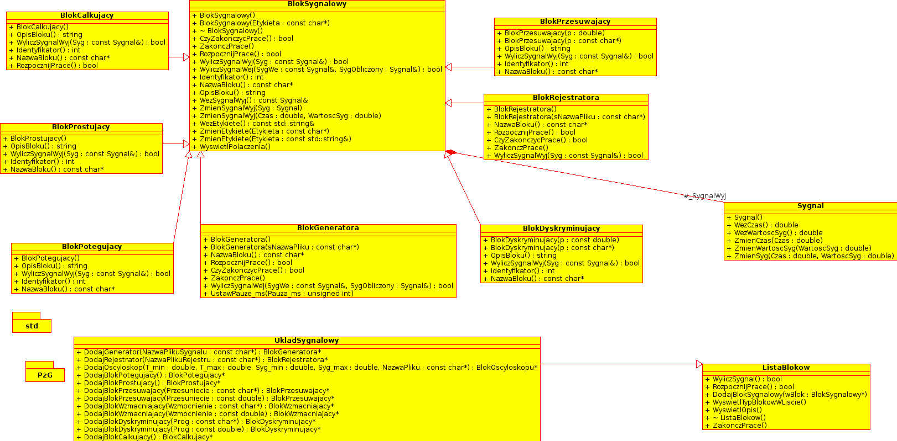

Fajny program, robi wszystko. Służy do zabawy bloczkami, nie działa tylko oscyloskop. Zaimplementowany jest interfejs do ręcznego dodawania bloczków, nie ma jednak usuwania.
Autor:
Dawid Perdek
Data:
20.05.2013
Wersja:
1.1

DIAGRAMY KLAS I CZYNNOSCI
Wygenerowano Mon Jun 3 2013 18:52:06 dla Superprogram programem 1.7.6.1